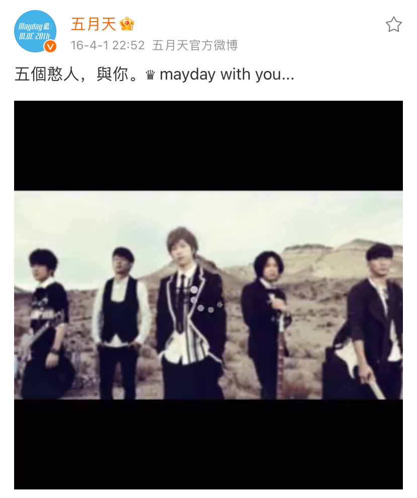

或是說：給我一個支點，一把吉他，我將舉起他 X 的地球。
玩音樂，因為玩音樂快樂，因為玩音樂的生活讓我有存在感，有雙腳踏在地上的感覺，直到聽音樂入了神，才能腳尖一踮，輕輕飄飄的浮進太空。
在太空中回頭，你會看到一顆藍得令人心疼的大彈珠，那是我所有成長回憶的地方。我看著上面的島嶼山巒，密佈著蛛網小徑，發現了我遺忘已久的足跡和回憶。
是的，還記得我、怪獸、瑪莎、石頭，經常擠進一台小車，殺上仰德大道，再拐進一路顛簸曲折的羊腸小徑，抵達冷水坑的公有的公共溫泉澡堂，幾個人褲子衣服一拉一扯，隨便抄起一個水瓢沖個兩三下，就往那池清澈的鐵泉裡泡著，那皮膚與冷空氣及溫泉水接觸時是怎麼樣的感覺，大致上已經忘的一乾二淨。我們赤紅著身體揮汗討論著編曲的細節，無數的音樂共識在這裡坦承相見的成形，話題被波光拆成一片一片，水氣煙霧泛著微弱的日光燈在木頭的小屋裡一片朦朧，就像回憶一樣飄邈。
但是我始終印象清晰著的，是塞滿小車還不時逸出黑暗的山區的音樂聲，和興致高昂的討論聲，我們在車上聽著啟蒙時代的羅大佑，唱和著伍佰的俐落嗓音，Oasis不可一世讓大家過足迷弟的癮，U2總是讓我們起雞皮疙瘩，還有永遠在披頭四歌聲中沉默的我們。
練團室，怪獸從台大後門用走的就會到，沒想到我早就翹課恭候多時，我們一起到樓下買麵包順便等從輔大下課的瑪莎，遇到千里迢迢從淡大殺過來正在停機車的石頭。這是我們最期待的時刻，電吉他從盒子裡的沉睡醒過來，音箱正在暖機呢。讓我確定一下，我們生活中的最重要的事，從那時起就一直是音樂了。
除了搞五月天之外，因為興趣和莫名的熱情使然，我也參與了「北區大專搖滾聯盟」，這個由許多大專院校玩團的人組成的。從一開始的打文件檔案，慢慢的有了越來越多的參與。電話又來了，星期三下午要到阿帕討論事情。到了阿帕鼓練團室，盟主 Omega 和執行秘書大魔頭映萱都已經坐在沙發上多時了，要討論的是一個新的大型演唱會，當時墾丁的春天吶喊，由幾個定居台中的外國人辦的很成功，大家覺得在台北也要有一個這樣的演出機會。而且，如果由台灣的學生們，玩樂團成員們自發性的完成，那不是更有意義嗎！
因此，大家醞釀產生出了這個想法。只要是報了名的樂團，就擁有自己的一個表演時段，大概是 30~40 分鐘吧，聯盟提供舞台，樂團只管盡情的演出就是了！棒透了！那名字呢? 這是生在台灣的樂團自己發起的大型演出；我們要讓不曾接觸樂團的人知道，世界上有這樣一群年輕人，在唱自己的歌。
負責美術的我，找來了幾個唸美術的同學，將野台戲的紋飾轉化，保留了傳統戲班那些充滿生命力的螢光色系，把數十公尺寬的舞台變成了一個超大野台。還由朋友家中的印刷廠贊助，我們以很低的價格印了一千張海報，我一個人騎著機車去搬，重得我差點摔車。搬回來了，那誰可以去貼呢? 很抱歉，聯盟人手不足。於是白天我載著盟主去各個大專院校，將海報交給社團負責人張貼；然後我跟映萱繼續在半夜偷偷的將海報貼在整個台北市，公館地下道，士林夜市的巷子裡……。
我們不怕累，因為我們知道，這些海報將在太陽出來以後，出現在眾人的眼前，驕傲的宣告著一個新音樂世代的來臨。
1996 年，第一屆的野台開唱誕生了，美術館前數千個人聚集著，他們有些是樂團原本的支持群，大部分則是第一次欣賞到這樣新鮮的音樂。世界的僵硬有一點鬆動了！第二年的年初，我們又重新聚首，更忙更累的拉廣告找贊助聯絡樂團，這一次在大安公園音樂台，找到了 MTV 台和民視全程錄影轉撥，希望讓更多的人看到聽到。報名參與的樂團更多了，活動從一天延長成兩天，音響器材公司願意加日不加價的幫忙，有一個問題是：要整夜有人看顧著器材。誰來做這件事呢? 很抱歉，聯盟人手不足……。
於是我有了那一段熱血歲月裡，最深刻的回憶。
還不到五月，應該穿厚一點的外套的。無人的音樂台前，好安靜，只有幾盞公園燈照著，把寂寞的感覺擴大了。一個人，我一個人坐在長椅上，早已放棄趕走數以百計輪流攻擊我的蚊子。不敢睡，怕隨時都可能有人來幹器材，到時候聯盟賠不完兜著走。
1997年的野台開唱的當夜，我的眼睛直愣愣的盯著幾個小時前熱鬧非凡，而此刻空無一人的舞台，那一夜，想了好多，自己的未來，樂團的未來。遙遠遙遠的以後，會不會有人記得我？在這個寂寞的星球，曾這樣的活過？那年的野台開唱，是五月天的天字第一場演出。
五月天的故事，隨後將變成一條支流，匯入了華人樂團史。
在2000年的金曲獎上，我們和拖拉庫、四分衛一起入圍最佳團體。亂彈拿了這個獎，主唱阿翔一隻手抄起獎盃舉過了頭舉上了天，豪氣干雲勝過任何一個得獎者，一句「樂團的時代來臨了！」。我們站在他的背後，激動的快要掉下淚來，覺得我們這些搞團的，一個一個都拿了獎，立了功。
隔年，金曲獎旋即增加了最佳樂團獎， 當下被我們又感激又慚愧的報回家了。2002年的最佳樂團我們就又落敗了，摘冠的是默默耕耘十年，投入社會議題甚深的交工樂隊，電視機前的我們和電視上的老字號樂團刺客和四分衛一起拍手祝賀，感同身受。 1976、13、tizzy bac、旺福、宇宙人、八三夭、魔幻力量、...，越來越多的樂團以獨立的方式，或與唱片公司合作，發表自己的唱片。我和怪獸之前也在滾石唱片，努力的創造後援給一些有想法的創作人，一步一步，將會有更多的玩音樂的年輕人被聽見，而他們，將慢慢改變這個世界。
這群愛音樂玩音樂的人們，寫下了歷史，改變著世界。
而五月天這個小小支流，沒有停下腳步，依然在悠悠歲月中，不住地奔竄。13年內推出了八張專輯作品，六次巡迴演唱。距離那個初次演出的夜晚，整整15年了，我剛從倫敦飛到香港，輾轉到了深圳，準備後天的「諾亞方舟」新巡演，這預計一路唱過整個亞州，甚至要霸佔鳥巢兩個夜晚。
2014年五月天再瘋狂地唱過東京、首爾、倫敦、巴黎、阿姆斯特丹、溫哥華、多倫多、紐約、芝加哥、休士頓、聖荷西、洛杉磯......。
而一個人生能有幾個15年呢？這一個15年，對我來說，很精采。
前面說過的：給我一個支點，一把吉他，我將舉起地球。地球很重，他X的重，不過我始終相信阿基米德說的。如果你手上有一把吉他的話，我想，給你一個支點，你就可以舉起這個地球。
最後，我要說，你們就是最穩固的偉大支點。
生日快樂，乾杯！
原文摘自「下課後 怪獸家點名」樂譜書序
第一次增補於2012.3.29
阿信臉書專頁
http://www.facebook.com/ashin555
阿信新浪微博
http://weibo.com/musiq
*0329成軍日十五週年
一開始，你只是公園裡挖砂的孩子。
而且，你只是路過公園，
看到另一群大一點的孩子們，圍著沙坑。
於是你好奇的走進公園，走近沙坑。
你伸出雙手，
跟著挖著這座破公園裡的破沙坑。
「底下有寶藏嗎？」
不，這根本不是個需要問的問題。
因為挖砂，本身就夠好玩了。
天色暗了，
有些孩子們回家了，
你跟另外幾個孩子繼續挖著沙坑，
有些是忘了回家。
而你，是根本不想回家。
/
光陰如果是一首詩，
那麼這首詩必定有腳，
確保在你不經意時，
狠狠踹你一腳。
詩篇來到這裡，
你已看不見孩子與公園。
巨大的探照燈懸在半空中往下探，
勉強讓光線照映到井底。
井旁隆隆作響圍滿了大型機具，
懸吊的、開鑿的、夯土的各種機具，
以及只有吼著才能讓彼此聽見的操作員。
更多的人車，川流進出此地，
工事圍籬重重的包圍著這龐大的基地。
這裡，
是當初的那座破公園。
你已經在這不知多深的井底，
將近1/4個世紀，
蒸騰的地熱、噴濺的污泥、
偶爾碎石殞落擦傷臉頰，
那都難免。
/
往頭上看去，
天空只是一個指甲蓋大小的洞，
但，重點不是天空。
更多疲倦、奔波、忙碌的夥伴，
從天空的指甲蓋的正中央一躍而下，
垂降至這窄小竪井中，
為你補給，
陪你拼命。
支持你的人，
甚至在井外為你吶喊打氣，
碎石依然偶爾砸落井底，
但總是旁人為你掛彩。
那個挖砂挖到不想回家的孩子，
才突然發現這竪井與周遭人事物，
早已是你的家。
/
「底下有寶藏嗎？」
竪井之上，耳語四起，
沿著井壁反彈至井底，問題似雷聲轟鳴。
但，這根本不用問。
挖砂本身就夠好玩了。
只要你記得，
一開始，
你就是公園裡那個挖砂的孩子。
/
所有長不大的
還沒長大的
與不得不長大的孩子們
第25+2個生日快樂
我們約在第25年見。
-
#五月天成团25周年#
.
#我和五月天的25周年#
.
*成團二十五週年
憨人* （詞曲:阿信）
我的心內 感覺人生的沉重 不敢來振動
我毋是好囝 嘛毋是歹人 我只是愛眠夢
我毋願隨湧隨風 飄浪西東 親像船無港
我毋願做人 奸巧軁縫 甘願來作戅人
我毋是頭腦空空 我毋是一只米蟲
人啊人 一世人 要按怎歡喜 過春夏秋冬
我有我的路 有我的夢
夢中的彼個世界 敢講伊是一場空
我行過的路只有希望
希望你我講過的話 放在心肝內 總有一天
看到滿天全金條 要捎無半項 環境來戲弄
背景無夠強 天才無夠弄 遂項是攏輸人
只好看破這虛華 毋驚路歹行 毋驚大雨淋
心上一字敢 面對我的夢 甘願來作戅人
我毋是頭腦空空 我毋是一只米蟲
人啊人 一世人 要按怎歡喜 過春夏秋冬
我有我的路 有我的夢
夢中的彼個世界 敢講伊是一場空
我行過的路只有希望
希望你我講過的話 放在心肝內 總有一天
我有我的路 有我的夢
夢中的彼個世界 敢講伊是一場空
我行過的路只有希望
希望你我講過的話 放在心肝內 總有一天
我知影總會有一天
Yeah, yeah, yeah, yeah
La-la-la, la
La-la-la, la
La-la-la, la
La-la-la, la
我有我的路 我有我的夢
La-la-la, la
總會有一天 總會有一天
La-la-la, la
憨人mv
*本站唯一主題曲🚩
“憨人”從這裡誕生
我們都是憨人
心上一個敢
走過無限歲月
我們都是五月天
心上一字敢 甘願做憨人
～～ 一起走吧 ～～